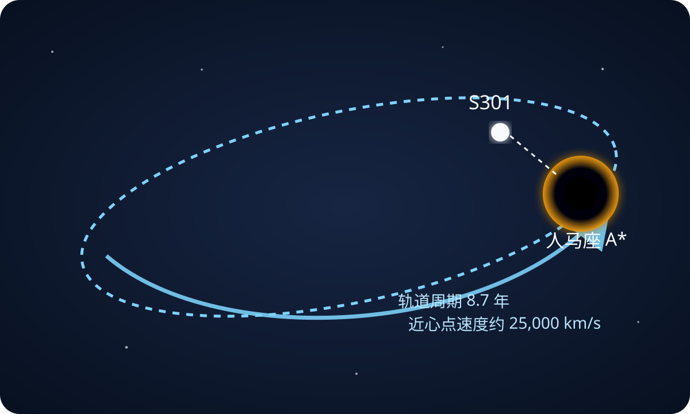
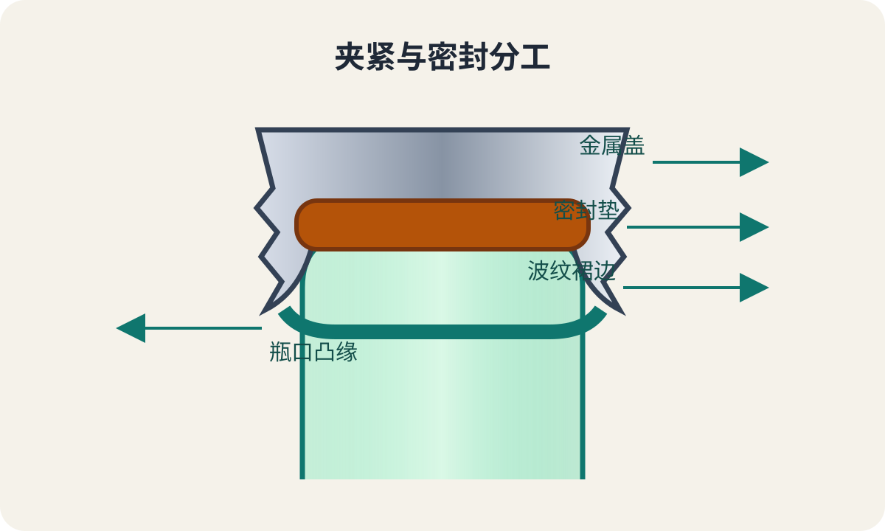
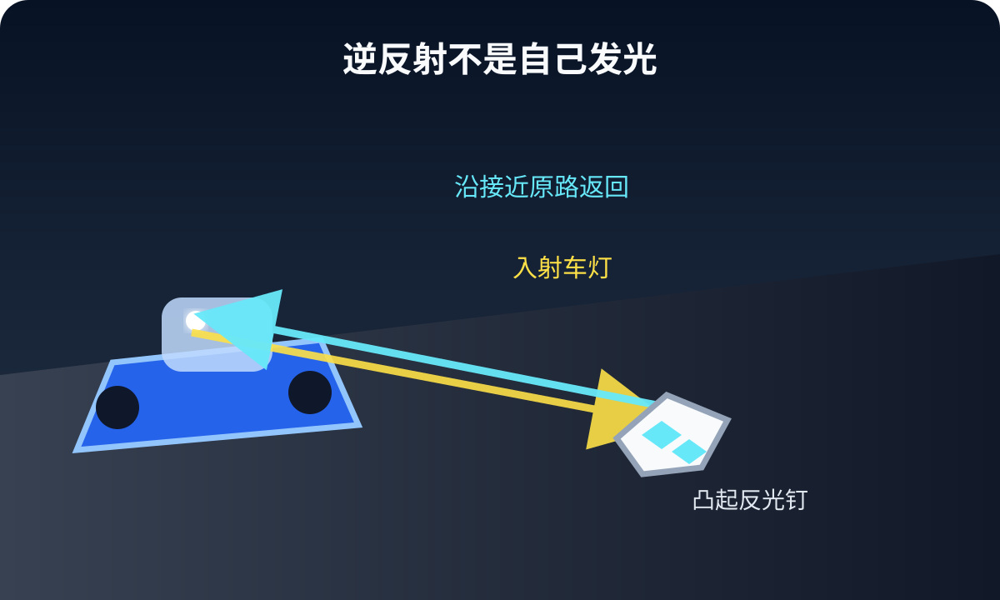

今日热点 01 · 商业 / 消费
沃尔玛同店销售增速降到六年最低：一家零售商不是整个消费者
沃尔玛美国第二季度同店销售增长2.6%，低于上一季度的4.1%，公司股价8月20日跌逾8%。但总营收、利润和电商仍在增长，药房政策与一次性关税退款也扭曲了表面数字。
先看慢在哪里
2.6%是同店销售增速，不是销售额萎缩
同店销售比较开业至少一年的门店及其关联线上业务，常用来排除新开店带来的增长。沃尔玛美国该指标第二季度增长2.6%，仍是正增长，只是低于第一季度的4.1%，也是六年来最慢。
美联社据此关注低收入消费者的谨慎支出，市场也把低于预期的增速当作警讯。不过，一家覆盖食品、药房和百货的零售商，只能提供消费侧的一扇窗，不能替代全社会零售、收入和价格数据。
别漏掉分母
药房政策拖累约1.25个百分点，剔除后仍未达到预期
公司称，药房受到“最高公平价格”立法影响。剔除健康与药房类别后，同店销售增速约为3.4%；这能解释一部分下滑，却仍低于FactSet汇总的约3.8%市场预期。
因此，最稳妥的判断不是“美国消费者突然熄火”，而是核心门店增速放慢、药房政策又额外压低读数。要判断消费周期，还需继续看交易次数、客单价、信用拖欠和其他零售商。
利润为何好看
29亿美元关税退款抬高利润，也被拿去做了1.1万项降价
沃尔玛披露当季收到约29亿美元关税退款，并称这给调整后营业利润增长带来约7.5个百分点的净收益。公司还表示，第二季度对超过1.1万种商品做了降价。
退款是真金白银，却不是每季都会重复的经营能力。读利润时应把一次性收益与基础业务分开；读降价时也要看它能持续多久，而不是把短期价格动作直接等同于通胀已经结束。
还有另一面
总营收增5.9%，电商增23%，慢的是门店可比增速
公司材料显示，总营收同比增长5.9%，全球电商增长23%，美国电商增长24%，全球广告增长38%。这些业务的增速远高于美国同店销售。
这组数字更像一个结构变化：消费者仍在买，但渠道、品类和利润来源正在移动。下次看到“六年最差”，先问它指总量、增速、利润还是某个可比口径，结论往往会因此改变。
沃尔玛美国同店销售仍增长2.6%，只是增速为六年来最低；药房政策和29亿美元关税退款分别影响销售与利润读数。
查看事实与延伸来源
沃尔玛8月20日Q2 FY27材料：营收、电商、同店销售与关税退款
美联社：同店销售放缓、市场预期与股价反应
今日热点 02 · 足球 / 治理
全球球迷团体要求因凡蒂诺辞职：请愿是压力，不是罢免票
来自六个足球洲际联合会范围的球迷组织8月20日发起请愿，要求FIFA主席詹尼·因凡蒂诺辞职并改革治理。它能扩大政治压力，却不会自动触发主席离任。
谁在发起
约40个国家级球迷团体加入，诉求不只换人
报道显示，参与者包括Football Supporters Europe、Football Supporters Africa、北美Independent Supporters Council及约40个国家级团体，覆盖六个洲际联合会的范围。
请愿要求因凡蒂诺辞职，也要求FIFA在影响赛事未来的决定中正式纳入球迷和其他利益相关者。换人是第一层，限制权力集中才是第二层。
导火索是什么
争议来自把未来世界杯利润引入私人资本的失败方案
此前方案拟设立约200亿美元规模的商业子公司，向私募资金出售未来世界杯利润的权益。方案8月1日被放弃，但内部震荡没有结束。
FIFA首席运营官Kevin Lamour在批评决策缺乏公开后离任；FIFA向美联社确认双方工作关系结束，但没有说明更多原因。请愿把这场内部危机转成了公开的球迷治理诉求。
它能不能让主席下台
签名不等于正式表决，权力仍在会员协会与FIFA机构
FIFA是由会员协会组成的组织。其主席由FIFA大会选举，规则和正式决定也通过大会、理事会等机构作出。公开请愿没有直接的罢免效力。
它的作用是改变会员协会、赞助方和媒体面对问题时的成本：签名越广，沉默越难被解释为中立。但除非这种压力进入正式议程、选举支持或辞职决定，主席职位不会因为网页上的数字自动变化。
接下来观察什么
看协会是否撤回支持，也看改革是否出现可执行条文
接下来可观察三件事：更多国家协会是否公开撤回支持，是否有人提出明确的替代候选人，以及球迷参与、信息披露、主席权限等改革是否写成可表决的文本。
“必须辞职”适合成为口号，却不是治理设计。真正能留下来的变化，要回答谁能提案、谁能查账、谁能否决，以及决策记录何时公开。
球迷请愿覆盖面广，却没有自动罢免效力；是否改变FIFA领导层，要看会员协会支持、正式议程与组织内表决。
查看事实与延伸来源
《卫报》8月20日：请愿参与范围、辞职与改革诉求
《队报》：法国及欧洲球迷组织参与情况
美联社：FIFA确认首席运营官离任及争议方案背景
FIFA法律文件页：大会、理事会与规则的正式文件入口
今日热点 03 · 天文学 / 黑洞
S301以光速8%以上掠过银心：它可能让黑洞自旋变得可测
Nature 8月19日发表S301恒星轨道测量：它每8.7年绕银河系中心黑洞人马座A*一周，近心点速度约每秒2.5万公里。关键不只是“最快”，而是它离黑洞足够近。

S301的轨道极扁长，近心点距离约为136至142个史瓦西半径；原创示意，不按比例。
先把纪录说准
8.7年一圈，近心点速度约每秒2.5万公里
S301是一颗暗弱的主序星，轨道周期8.7年，偏心率超过0.98。它靠近人马座A*时，模型给出的峰值速度约为每秒2.5万至2.56万公里，相当于光速的8.3%至8.5%。
论文称它刷新了已知绕人马座A*恒星的最短周期纪录。这里的“最快”指在一条被连续观测并拟合出的安全轨道上达到的峰值，不是说它始终以这个速度穿过银河系。
它为什么特别
近心点只有136至142个史瓦西半径，强引力效应被放大
S301与黑洞最近时，距离约为136至142个史瓦西半径，约比著名的S2恒星近十倍。它的轨道每绕一圈就会出现约2度的相对论进动。
把恒星当成试验粒子，天文学家能从轨道偏移反推中心天体的性质。越靠近黑洞，牛顿引力解释不了的细小差异越大，也越可能被仪器分辨。
真正要测什么
旋转黑洞会拖拽时空，留下比普通进动更细的偏移
广义相对论预言，旋转黑洞会拖拽周围时空，产生Lense–Thirring进动。这个效应比质量造成的常规相对论进动更弱，过去往往需要多颗恒星和更长观测时间。
论文估计，S301对黑洞自旋足够敏感，现有近红外干涉仪和未来极大望远镜光谱仪可能在约十年内测到相关信号。这里仍是可行性判断，不是已经测出了人马座A*的自旋值。
数据从哪里来
2023年被GRAVITY认出，研究者又回溯到2017年观测
研究团队用欧洲南方天文台甚大望远镜干涉仪上的GRAVITY设备识别S301，并在旧数据中追溯它从2017年以来的位置。多年的位置点共同约束出这条极扁长轨道。
下一次近心点预计在2031年前后。届时能否把黑洞自旋与其他恒星、暗天体造成的扰动分开，是这项发现接下来的难题。纪录是入口，持续观测才会给出物理答案。
S301每8.7年绕人马座A*一圈，近心点速度超过光速8%；价值在于它足够靠近黑洞，可能在约十年内暴露自旋造成的时空拖拽。
查看事实与延伸来源
Nature论文：S301轨道、速度、近心点与黑洞自旋灵敏度
《卫报》：GRAVITY观测、2031年近心点与研究者解读
韩联社：论文数据与欧洲南方天文台设备的独立报道
涉猎 01 · 日用品 / 包装
皇冠瓶盖为什么有一圈褶：它把软垫均匀压在瓶口上
皇冠盖的金属裙边被压到玻璃瓶口凸缘下，内侧软垫承担真正的气密封口。褶皱让薄金属能在圆周上均匀收紧，也让开瓶器有地方施力。

金属盖负责夹紧，内衬软垫贴合瓶口形成密封；原创示意，不按比例。
密封分两层
金属负责夹住，软垫负责堵住微小缝隙
玻璃瓶口再平也有微小起伏，硬金属直接压上去不容易气密。皇冠盖内侧的软木、软垫或现代聚合物衬层会被压缩，填进这些不平处。
外面的薄钢片则被机器向下、向内压卷，波纹裙边扣在瓶口凸缘下面。两者分工后，盖子既能承受碳酸饮料内部压力，也能被工具一次撬开。
为什么做成褶
波纹把圆周分成许多可弯的小段，收口更均匀
一整圈平直金属在缩径时容易起皱失控。预先做出的波纹把裙边分成许多可弯曲的小段，封盖机下压时，每段都能向瓶颈收拢。
这些褶还给开瓶器提供了受力边缘。开瓶器一端顶住盖面，另一端勾住裙边，短距离抬手就把拉力集中到局部，让金属变形并脱离凸缘。
1892年的关键
Painter把封口、专用瓶口和高速装瓶变成一套系统
William Painter在1892年前后取得皇冠式瓶盖专利。专利描述了带波纹法兰的金属盖，压紧后抱住特定形状的瓶头；随后配套机械让封盖进入连续生产。
这项设计的影响不只是一片铁皮。统一的盖、瓶口和机器接口，减少了碳酸饮料漏气与污染，也把一次性密封变成可高速重复的工业动作。
皇冠盖不是靠金属本身堵住气体：裙边扣紧瓶口凸缘，内衬软垫填平微小缝隙；波纹让收口和开启都更可控。
查看事实与延伸来源
William Painter专利：波纹法兰、瓶头与压紧结构
美国国家发明家名人堂：Painter与1892年皇冠瓶盖
美国机械工程师学会：皇冠盖与汽水装瓶机工程史
涉猎 02 · 服装 / 社会史
维多利亚哀服不只是全黑：颜色、面料和时间都在传递身份
19世纪欧美哀服把私人悲伤变成公开可读的服装规则。全丧期重黑与无光面料，随后才逐步加入白、灰、淡紫；持续多久，还取决于亲属关系、阶层与支付能力。
黑色不是全部
全丧、次丧、半丧，把时间写在衣服上
大都会艺术博物馆藏品说明，维多利亚时代的全丧服通常通体黑色；到了半丧阶段，才可加入少量白色或紫色。不同阶段告诉旁人，佩戴者仍在守丧，也让社会活动逐步恢复。
规则并非一本全球通用手册。亲属远近、性别、地方习惯与家庭地位都会改变期限。博物馆所说的三个月至两年半，是当时社会实践的跨度，不是每个人都必须照做的单一时钟。
为什么偏爱无光面料
黑绉纱压低反光，却仍跟随当时的时装轮廓
全丧期常用黑色绉纱等低光泽材料，视觉上克制、少装饰。但守丧服并没有脱离时装：1870年代的裙装依然会有臀垫轮廓、不对称装饰和讲究的下摆。
这说明服装同时传递两类信息：我正在哀悼，也仍属于某个阶层和社交环境。越精细的黑色工艺，反而越能显示制衣成本。
从宫廷到市场
公众人物扩大风尚，染黑旧衣则让更多家庭跟上
维多利亚女王在1861年阿尔伯特亲王去世后长期穿丧服，使黑色哀服在19世纪后半叶达到高峰。更早的1817年，夏洛特公主去世已引发公众集中购买黑布和纪念品。
严格礼俗覆盖不同阶层，却不代表人人都买得起整套新衣。资源有限的家庭会把日常衣物染黑或改造。哀服由此既是情感语言，也是纺织、染色和零售市场的一门生意。
维多利亚哀服用颜色、光泽和阶段标记守丧进程；它既表达悲伤，也暴露亲属关系、阶层和消费能力。
查看事实与延伸来源
大都会艺术博物馆：1870—72年哀服、阶段与面料说明
V&A：1817年夏洛特公主去世后的黑布与纪念品热潮
大都会艺术博物馆出版物：维多利亚服装与哀服背景
涉猎 03 · 道路 / 光学
道路反光钉为什么夜里亮：它把车灯沿原路送回去
反光钉不是自己发光。微小玻璃珠或角锥棱镜把入射车灯折转，沿接近原路的方向返回；因为司机眼睛就在车灯上方，亮点会正好落进视野。

逆反射让光线回到接近光源的方向；驾驶员眼睛与车灯相距不远，因此能看到强亮点。原创示意。
不是普通镜面反射
镜子把光甩到另一边，逆反射尽量把光送回光源
平面镜遵守入射角等于反射角，车灯斜照时，光往往被反到路旁。逆反射材料使用玻璃珠或角锥棱镜，让光经过折射和多次反射后，返回接近入射方向。
驾驶员的眼睛虽然不在灯泡位置，却离车灯很近，因此能接到大量返回光。美国联邦公路管理局把这种性质定义为向光源方向返回光线，也是夜间标线可见的核心。
为什么要凸出路面
抬高反射面，湿路时不容易被一层水吞掉
平涂标线在干燥时可以靠嵌入的玻璃珠逆反射，但下雨后，水膜会改变光路并压低对比度。凸起的反光钉把有效表面抬离路面，更容易越过浅水继续工作。
它也有代价：要承受轮胎、除雪设备、泥沙和温差。现代道路会按气候选用粘贴式、嵌入式或可抗除雪铲的结构，并不是所有路段都适合同一种反光钉。
“猫眼”从何而来
Percy Shaw在1934年把反射玻璃和自清洁橡胶结合
英国道路承包商Percy Shaw在1934年为Catseye申请专利，次年成立公司。早期结构把玻璃反射体装在可下压的橡胶座里。
车轮压过时，橡胶座像眼睑一样下沉，积水会冲洗玻璃表面。今天许多反光钉已改用角锥棱镜和不同外壳，但目标没变：少用电，仍把道路边界送回驾驶员眼前。
道路反光钉靠逆反射，不靠自己发光；凸起结构提高湿夜可见性，早期Catseye还用可下压橡胶座和雨水清洁玻璃。
查看事实与延伸来源
美国联邦公路管理局：逆反射定义、玻璃珠与驾驶员视线
美国联邦公路管理局：凸起反光标记、角锥结构与耐候要求
Calderdale Museums：Percy Shaw、1934年专利与自清洁结构
“若感知之门得到清洗，万物就会如其本来那样显现：无限。”
威廉·布莱克《天堂与地狱的婚姻》（约1790—1793） · 本刊译
布莱克写的不是把眼睛擦亮这么简单。他认为习惯与成见像狭窄洞口，使人只看见被切碎、被命名后的世界。清洗“感知之门”，意味着暂时松开那些现成分类，让事物重新显出超出用途和标签的部分。它提醒人：看见从来不是纯粹接收，也受观看方式限制。读新闻和理解他人时，同样要防备这道窄门。
核对原文与语境
“一件事物的成本，是立即或最终必须用来交换它的、我称之为生命的那部分。”
亨利·戴维·梭罗《瓦尔登湖》（1854） · 本刊译
梭罗把价格从钱换成时间：一件东西不仅花去账面金额，还占用获得、维护和担心失去它所需的生命。这并不推出“越便宜越好”，而是要求把选择放回完整成本。买下的便利是否省回了时间，追求的收入是否吞掉了生活，才是这句话留下的两道账。付款只发生一次，照料和牵挂却可能持续很多年。
核对原文与语境
“因此，当我们建造时，让我们想到：我们是在为永久而建造。”
约翰·拉斯金《建筑的七盏明灯·记忆之灯》（1849） · 本刊译
拉斯金谈建筑的“记忆”，并非要求所有房屋永不拆改。他反对只为眼前便利施工，因为建筑会成为后来者理解一代人的证据。放到今天，这句话可读成寿命意识：材料能否维修，结构能否适应，记录能否交接。耐久不是表面厚重，而是给未来留下继续使用和判断的余地。
核对原文与语境
“当我们试图把任何一件事物单独挑出来时，都会发现它与宇宙中的其他一切相连。”
约翰·缪尔《我在内华达山脉的第一个夏天》（1911） · 本刊译
缪尔在山地观察中发现，植物、岩石、水和动物很难被真正孤立地理解。今天说系统、供应链或生态网络，仍是在处理同一件事：移动一个节点，会把影响送往别处。联系并不表示所有影响都同样大；更实用的做法，是在行动前先找依赖、反馈与可能承受代价的远端，再判断哪些联系值得优先处理。
核对原文与语境
“城市之所以能为每个人提供某些东西，只因、也只在它由每个人共同创造时才可能。”
简·雅各布斯《美国大城市的死与生》（1961） · 本刊译
雅各布斯反对把城市当成可由少数专家一次画完的机器。街道安全、店铺组合和邻里互助，来自许多人每天微小而分散的选择。共同创造不等于每项工程都全民表决；它要求规划者保留反馈通道，观察真实使用，并允许居民、商户和后来者继续改造，而不是把蓝图当成终局。
核对原文与语境